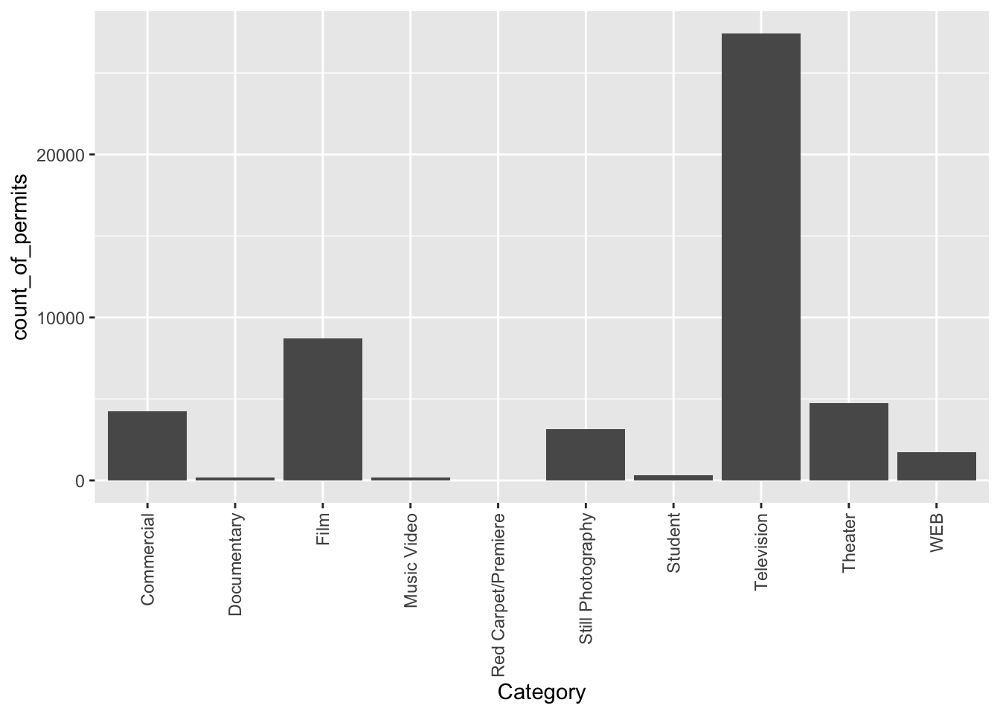
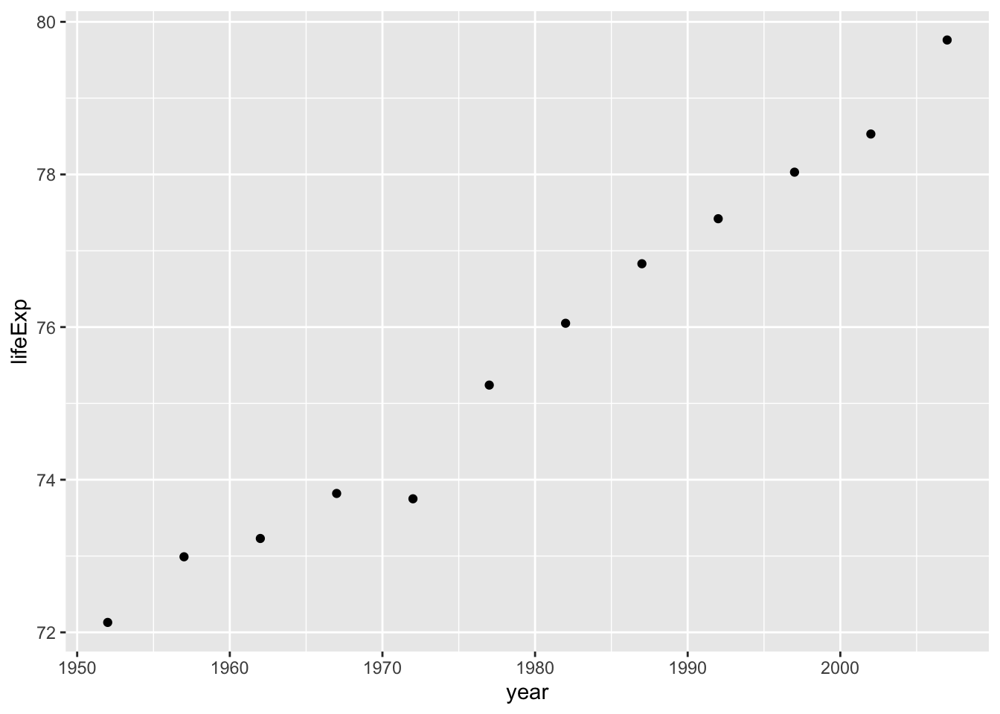
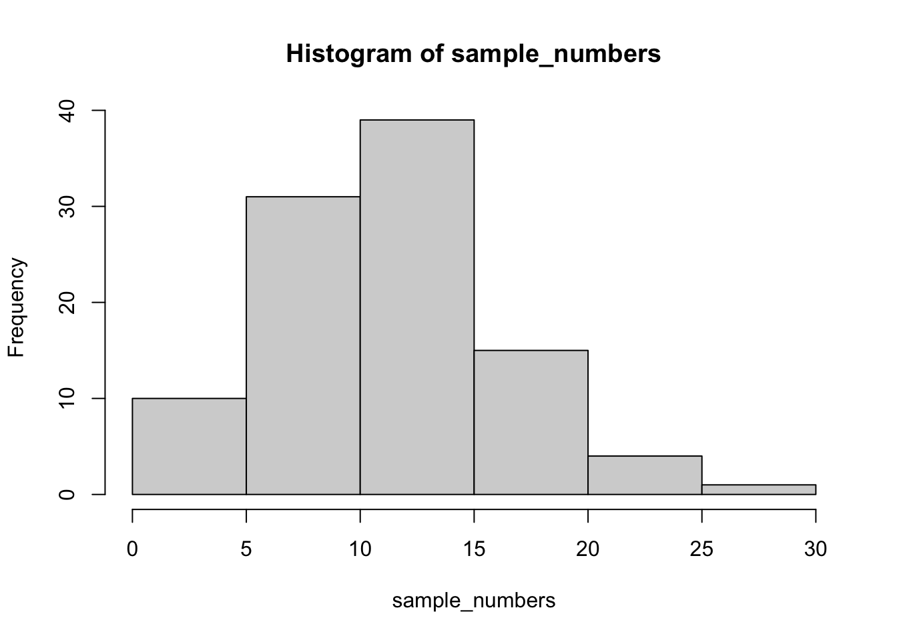

2 Week 2: Describing Data
The commonality between science and art is in trying to see profoundly - to develop strategies of seeing and showing. —Edward Tufte
The purpose of this lab is to show you how to generate graphs and compute basic descriptive statistics, including measures of central tendency (mean, mode, median) and variation (range, variance, standard deviation). We learned in the lecture and from the textbook that data we want to answer questions of, often comes with loads of numbers. Too many numbers to look at all at once. That’s one reason we use descriptive statistics. To reduce the big set of numbers to one or two summary numbers or a pretty graph that tells us something about all of the numbers. R can produce descriptive statistics for you in many ways. We’ll go over some R basics for descriptive statistics, and then use our new found skills to ask some questions about real data. To get started, download the lab template here (right click: save as) or from Canvas. Copy the lab template to your lab folder, double-click Labs.proj to start RStudio and open the lab template.
2.1 Learning goals
During this lab you will do the following:
- Learn how to load data into R
- Learn how data is structured
- Generate graphs using ggplot2
- Compute measures of central tendency and variation using R
- Answer some questions about data using descriptive statistics
2.2 Loading data
In order to load data, we need to have some data first… It turns out that NYC makes a lot of data about a lot things open and free for anyone to download and look at. I searched through the data, and found a data file that lists the locations of film permits for shooting movies all throughout the different boroughs of NYC. There are multiple ways to load this data into R and we are going to look at one way below.
If you have downloaded the Labs_Template.zip file, then you should have the data file in the data folder of your Labs project. Assuming you are working in the lab directory, use the following commands to load the data into RStudio:
library(tidyverse)
nyc_films <-read_csv("data/Film_Permits.csv")Make sure to follow along with the code examples and execute the code above in your RStudio console or (even better) in a code chunk in your lab template file!
Try to understand what is happening in the code above. We first load something called a library in R. R can do a lot of things out of the box, but over time people have written functions that extend the base capabilities of R. The library we load is called tidyverse. Then, we use the function read_csv() (from the tidyverse library) to load the .csv file and assign it to the variable nyc_films.
If you are having issues getting the data loaded, talk to your tutor.
2.2.1 First look at the data
You will be downloading and analyzing all kinds of data files this quad. After loading a file, it is always a good idea to have a first look at your data and see what you’ve got.
In the top right-hand corner of the RStudio window, in the environment tab, you should now see a variable called nyc_films. If you click it, it will show you the contents of the data in a new window. The data is stored in something we call a data.frame12. It’s R lingo, for the thing that contains the data. Notice it is shaped like a rectangle, with rows going across, and columns going up and down. It looks kind of like an excel spreadsheet if you are familiar with Excel.
You can also use the R functions head() and tail() to print out the first 6 or last 6 rows of our data frame in the R console, or glimpse() for a quick overview of our data frame (again, follow along in your own RStudio):
# head() prints the first 6 rows of a data frame
head(nyc_films)
# tail() prints the last 6 rows of a data frame
tail(nyc_films)
# glimpse() to show a brief summary of a data frame
glimpse(nyc_films)Using the head(), tail() and glimpse() functions on this data.frame will give you a quick indication of its contents. You’ll see that this data frame is really big, it has 50,728 rows (or observations) and 14 columns (or variables).
We can also use the $ operator to request the data of a single column (i.e. variable) from the data.frame. For example, to print the data of the first 6 rows of the Category column:
head(nyc_films$Category)## [1] "Television" "Television" "Television" "Commercial" "Television"
## [6] "Television"2.2.1.1 Data exercises
Complete the following exercises in your lab template.
- What are the last 6 entries of the
Categorycolumn innyc_films? - What are the last 10 entries of the
EventTypecolumn innyc_films? (hint: usetail()with then=argument) - You can also load data directly from the internet using
read_csv(). Useread_csv()to load the data from https://github.com/thomashulst/quantrma_lab/raw/master/data/Film_Permits.csv and assign it to the variablenyc_films2.
2.3 Making graphs
2.3.1 Wrangle first
Let’s walk through a couple questions we might have about the NYC films data and make several graphs to visualize the answers to these questions. We saw there were 50,728 film permits made. We also saw that there were different columns telling us information about each of the film permits. For example, the Borough column lists the borough for each request, i.e. whether the permit was for: Manhattan, Brooklyn, Bronx, Queen’s, or Staten Island.
We could ask: where are the most film permits being requested (i.e. what borough)? We can find out by using R to plot the data in a bar plot. A bar plot looks a bit like a histogram, but the bars on a bar plot represent the counts of categorical data instead of continuous data. Before we can make this plot, we need to have R count how many film permits are made in each borough (we surely don’t want to do that by hand!). This step is called wrangling (i.e. preparing your data for visualization and/or further analysis), which you might remember from the lecture.
To prepare the nyc_films data for plotting, run the following code:
counts <- nyc_films %>%
group_by(Borough) %>%
summarize(count_of_permits = length(Borough))What is happening in the code above? Step through the code line by line to see if you understand it. On the first line, we are using a new operator you haven’t encountered before: %>%. This operator is called the ‘pipe’ operator. The pipe operator is part of the tidyverse library we loaded before. The pipe operator allows us to clearly express a sequence of multiple operations on a data frame.
On the first line of the code above, we tell R: use the data frame nyc_films for the next operations and assign the result to the variable counts. In the second line of the code we group the data by each of the five boroughs. On the final line, we summarize the number of times each borough occurs using the length() function.13 We end up with a variable counts with two columns: the name of the boroughs (counts$Borough) and the number of permits counted (counts$count_of_permits).
The code above is equivalent to the code below which doesn’t use the pipe operator, but assigns the outcome of an operation to an intermediate variable.
nyc_films_grouped <- group_by(nyc_films, Borough)
counts <- summarize(nyc_films_grouped, count_of_permits = length(Borough))The difference between the first or second code block might seem a bit confusing or arbitrary, as both methods generate the same result, but when performing many operations on a data frame, the pipe operator results in much more efficient and readable code. Either way, if you click on the counts variable in your environment, you will see the five boroughs listed, along with the counts for how many film permits were requested in each Borough. Those are the numbers we want to plot in a graph.
2.3.2 Plotting counts
We actually make the plot using ggplot(). ggplot is also part of the tidyverse and is very powerful once you get the hand of it, but it can be a bit intimidating in the beginning14. Like previous code examples, it helps if we demonstrate the code first and you follow along by copy/pasting and executing the code. You can then go very quickly to answering your own questions about data, by making minor adjustments to the code examples.
Here’s the code to make the plot:
ggplot(counts, aes(x = Borough, y = count_of_permits )) +
geom_col()
There it is, we’re done here! We can easily look at this graph, and answer our question. Most of the film permits were requested in Manhattan, followed by Brooklyn, then Queen’s, the Bronx, and finally Staten Island. Again, you might be skeptical of what you are doing here, just copying and pasting things. Soon you’ll see how fast you can answer questions about data by copying and pasting code and just making a few little changes. Let’s quickly answer another question about what kinds of films are being made to show you what we mean.
The column Category contains information about the category of the permits. Let’s copy/paste the code we already used, and see count the categories the films fall into. See if you can tell what I changed in the code to make this work:
counts <- nyc_films %>%
group_by(Category) %>%
summarize(count_of_permits = length(Category))
ggplot(counts, aes(x = Category, y = count_of_permits )) +
geom_col()
OK, so this figure might look a bit weird because the labels on the bottom are running into each other. We’ll fix that in a bit. First, let’s notice the changes.
- I changed
BoroughtoCategory. That was the main thing. - I left out a bunch of things from before. I didn’t need to re-run the very early code to get the data in the
nyc_filmsvariable. R already has those things in it’s memory, so we don’t need to do that again.
So how do we fix the graph? Good question. You probably have no idea how to do this, but Googling your questions is a great way to learn R. It’s what everybody does. I Googled “rotating labels ggplot” and found lots of ways to fix the graph. The trick I used is to add the last line in the R code below. I just copy-pasted it from the solution I found on stack overflow (you will become friends with stack overflow this course, there are many solutions there to all of your questions).
counts <- nyc_films %>%
group_by(Category) %>%
summarize(count_of_permits = length(Category))
ggplot(counts, aes(x = Category, y = count_of_permits )) +
geom_col()+
theme(axis.text.x = element_text(angle = 90, vjust = 0.5, hjust=1))
Googling this is not the only way to answer your questions. In addition to the help function built into R (?), which to be honest can be quite confusing, you can also use R cheatsheets or look up the reference manual on the ggplot website. It would impossible to remember all of this from the top of your head! We cannot stress enough, part of learning to program, and doing quantitative data analysis, is knowing how and where to search for things you do not know.
Before we go further, I want to point out some basic properties of ggplot, just to give you a sense of how it is working. The ggplot() function makes use of so-called layers. What are these layers? Well, it draws things from the bottom up. It lays down one layer of graphics, then you can keep adding on top, drawing more things. So the idea is something like: Layer 1 + Layer 2 + Layer 3, and so on. If you want Layer 3 to be Layer 2, then you just switch them in the code.
Here is a way of thinking about ggplot code:
ggplot(name_of_data, aes(x = name_of_x_variable, y = name_of_y_variable)) +
geom_layer()+
geom_layer()+
geom_layer()What I want you to focus on in the above description is the \(+\) signs. What we are doing with the plus signs is adding layers to plot. The layers get added in the order that they are written (a bit like the %>% operator for data frames). If you look back to our previous code, you will see we add a geom_col layer, then we added another layer to change the rotation of the words on the x-axis. This is how it works.
Section 2.3.3 below contains additional materials which are very helpful when working on your assignments, but are not mandatory for completing this lab. Section 2.3.3 will explain how to add a title to your graph. Or change the labels on the axes. Or add different colors, or change the font-size, or change the background. You can change all of these things by adding different lines to the existing code demonstrated below. We will skip those materials for now.
For this lab, after completing the Plot exercises below in your lab template, skip the additional materials in Section 2.3.3 and go directly to Section 2.4.
2.3.2.1 Plot exercises
Complete the following exercises in your lab template:
- Explain in your own words what is happening in the code block below. What does the
%>%operator indicate?
counts <- nyc_films %>%
group_by(Category) %>%
summarize(count_of_permits = length(Category))- The first argument of
ggplot()should always be the data argument. In what type of form should the data be provided? (hint:?ggplot) - What function can we use to set the title of a plot? Use the ggplot reference manual, the additional materials, or Google to answer this question.
2.3.3 Additional materials: ggplot() layers and functions
These are additional materials for when you are working on your assignment and want to change to look of your graph. You can also return to these materials when doing quantitative analyses in different courses.
2.3.3.1 ylab() changes y label
The last graph had count_of_permits as the label on the y-axis. That doesn’t look right. ggplot automatically took the label from the column name, and made it be the name on the y-axis. We can change that by adding ylab("text"). We do this by adding a \(+\) to the last line, then adding ylab()
ggplot(counts, aes(x = Category, y = count_of_permits )) +
geom_col() +
theme(axis.text.x = element_text(angle = 90, hjust = 1)) +
ylab("Number of Film Permits")
2.3.3.2 xlab() changes x label
Let’s slightly modify the x label too:
ggplot(counts, aes(x = Category, y = count_of_permits )) +
geom_col() +
theme(axis.text.x = element_text(angle = 90, hjust = 1)) +
ylab("Number of Film Permits") +
xlab("Category of film")
2.3.3.3 ggtitle() adds title
Let’s give our graph a title:
ggplot(counts, aes(x = Category, y = count_of_permits )) +
geom_col() +
theme(axis.text.x = element_text(angle = 90, hjust = 1)) +
ylab("Number of Film Permits") +
xlab("Category of film") +
ggtitle("Number of Film permits in NYC by Category")
2.3.3.4 color() adds color
Let’s make the bars different colors. To do this, we add new code to the inside of the aes() part:
ggplot(counts, aes(x = Category, y = count_of_permits, color=Category )) +
geom_col() +
theme(axis.text.x = element_text(angle = 90, hjust = 1)) +
ylab("Number of Film Permits") +
xlab("Category of film") +
ggtitle("Number of Film permits in NYC by Category")
2.3.3.5 fill() fills in color
Let’s make the bars different colors. To do this, we add new code to the inside of the aes() part…Notice I’ve started using new lines to make the code more readable.
ggplot(counts, aes(x = Category, y = count_of_permits,
color=Category,
fill= Category )) +
geom_col() +
theme(axis.text.x = element_text(angle = 90, hjust = 1)) +
ylab("Number of Film Permits") +
xlab("Category of film") +
ggtitle("Number of Film permits in NYC by Category")
2.3.3.6 Get rid of the legend
Sometimes you just don’t want the legend on the side, to remove it add
theme(legend.position="none")
ggplot(counts, aes(x = Category, y = count_of_permits,
color=Category,
fill= Category )) +
geom_col() +
theme(axis.text.x = element_text(angle = 90, hjust = 1)) +
ylab("Number of Film Permits") +
xlab("Category of film") +
ggtitle("Number of Film permits in NYC by Category") +
theme(legend.position="none")
2.3.3.7 theme_classic() makes white background
The rest is often just visual preference. For example, the graph above has this grey grid behind the bars. For a clean classic no nonsense look, use theme_classic() to take away the grid.
ggplot(counts, aes(x = Category, y = count_of_permits,
color=Category,
fill= Category )) +
geom_col() +
theme(axis.text.x = element_text(angle = 90, hjust = 1)) +
ylab("Number of Film Permits") +
xlab("Category of film") +
ggtitle("Number of Film permits in NYC by Category") +
theme(legend.position="none") +
theme_classic()
2.3.3.8 Sometimes layer order matters
Interesting, theme_classic() is misbehaving a little bit and incorrectly renders the axis labels and reintroduces the legend. It looks like we have some of our layers out of order, let’s re-order. I just moved theme_classic() to just underneath the geom_bar() line. Now everything get’s drawn properly.
ggplot(counts, aes(x = Category, y = count_of_permits,
color=Category,
fill= Category )) +
geom_col() +
theme_classic() +
theme(axis.text.x = element_text(angle = 90, hjust = 1)) +
ylab("Number of Film Permits") +
xlab("Category of film") +
ggtitle("Number of Film permits in NYC by Category") +
theme(legend.position="none") 
2.3.3.9 Font-size
Changing font-size is often something you want to do. ggplot2 can do this in different ways. I suggest using the base_size option inside theme_classic(). You set one number for the largest font size in the graph, and everything else gets scaled to fit with that that first number. It’s really convenient. Look for the inside of theme_classic()
ggplot(counts, aes(x = Category, y = count_of_permits,
color=Category,
fill= Category )) +
geom_col() +
theme_classic(base_size = 15) +
theme(axis.text.x = element_text(angle = 90, hjust = 1)) +
ylab("Number of Film Permits") +
xlab("Category of film") +
ggtitle("Number of Film permits in NYC by Category") +
theme(legend.position="none")  or make things small… just to see what happens
or make things small… just to see what happens
ggplot(counts, aes(x = Category, y = count_of_permits,
color=Category,
fill= Category )) +
geom_col() +
theme_classic(base_size = 10) +
theme(axis.text.x = element_text(angle = 90, hjust = 1)) +
ylab("Number of Film Permits") +
xlab("Category of film") +
ggtitle("Number of Film permits in NYC by Category") +
theme(legend.position="none") 
2.3.3.10 What are the sub-categories of films?
Notice the nyc_films data frame also has a column for SubCategoryName. Let’s see what’s going on there with a quick plot.
# comments are really useful: R will ignore them, but they can explain to a reader
# what is going on in the code
# get the counts
counts <- nyc_films %>%
group_by(SubCategoryName) %>% # group by SubCategoryName instead of Borough/Category
summarize(count_of_permits = length(SubCategoryName))
# make the plot
ggplot(counts, aes(x = SubCategoryName, y = count_of_permits,
color=SubCategoryName,
fill= SubCategoryName )) +
geom_col() +
theme_classic(base_size = 10) +
theme(axis.text.x = element_text(angle = 90, hjust = 1)) +
ylab("Number of Film Permits") +
xlab("Sub-category of film") +
ggtitle("Number of Film permits in NYC by Sub-category") +
theme(legend.position="none") 
I guess “episodic series” are the most common. Using a graph like this gave us our answer super fast.
2.3.3.11 facet_wrap() for categories by different boroughs
Let’s see one more really useful thing about ggplot. It’s called facet_wrap(). It’s an ugly word, but you will see that it is very cool, and you can do next-level-super-hero graph styles with facet_wrap that other people can’t do very easily.
Here’s our question. We know that films are made in different Boroughs, and that films are made in different Categories, but do different Boroughs have different patterns for the kinds of categories of films they request permits for? Are their more TV shows in Brooklyn? How do we find out? Watch, just like this:
# get the counts
counts <- nyc_films %>%
group_by(Borough,Category) %>% # group by two categories: Borough and Category
summarize(count_of_permits = length(Category))
# make the plot
ggplot(counts, aes(x = Category, y = count_of_permits,
color=Category,
fill= Category )) +
geom_col() +
theme_classic(base_size = 10) +
theme(axis.text.x = element_text(angle = 90, hjust = 1)) +
ylab("Number of Film Permits") +
xlab("Category of film") +
ggtitle("Number of Film permits in NYC by Category and Borough") +
theme(legend.position="none") +
facet_wrap(~Borough, ncol=3)We did two important things. First we added Borough and Category into the group_by() function. This automatically gives separate counts for each category of film, for each Borough. Then we added facet_wrap(~Borough, ncol=3) to the end of the plot, and it automatically drew us 5 different bar graphs, one for each Borough! That was fast. Imagine doing that by hand.
The nice thing about this is we can switch things around if we want. For example, we could do it this way by switching the Category with Borough, and facet-wrapping by Category instead of Borough like we did above. Do what works for you.
ggplot(counts, aes(x = Borough, y = count_of_permits,
color=Borough,
fill= Borough )) +
geom_col() +
theme_classic(base_size = 10) +
theme(axis.text.x = element_text(angle = 90, hjust = 1)) +
ylab("Number of Film Permits") +
xlab("Borough") +
ggtitle("Number of Film permits in NYC by Category and Borough") +
theme(legend.position="none") +
facet_wrap(~Category, ncol=5)
2.4 Gapminder dataset
Gapminder is an organization that collects some really interesting worldwide data. We will actually be using their data for both of the assignments in this course. The Gapminder foundation makes cool visualization tools for looking at the data, built right into their website that you can play around with: https://www.gapminder.org/tools/. There is also an R library called gapminder which contains a small part of the data hosted on their website. When you install this library, it loads in some of the data from Gapminder directly into R, so we can easily play with it. You should have the Gapminder library installed if you followed all instructions of the Getting started guide, but if you don’t have it installed, you can install it by running this code:
install.packages("gapminder")Once the library is installed, you need to load it and put the gapminder data into a data frame, like we do here:
library(gapminder) # loads the library
gapminder_df <- gapminder2.4.1 Look at the data
You can look at the data frame in the environment tab to see what is in it, and/or you can use the head()/tail()/glimpse() functions again:
head(gapminder_df)## # A tibble: 6 x 6
## country continent year lifeExp pop gdpPercap
## <fct> <fct> <int> <dbl> <int> <dbl>
## 1 Afghanistan Asia 1952 28.8 8425333 779.
## 2 Afghanistan Asia 1957 30.3 9240934 821.
## 3 Afghanistan Asia 1962 32.0 10267083 853.
## 4 Afghanistan Asia 1967 34.0 11537966 836.
## 5 Afghanistan Asia 1972 36.1 13079460 740.
## 6 Afghanistan Asia 1977 38.4 14880372 786.tail(gapminder_df)## # A tibble: 6 x 6
## country continent year lifeExp pop gdpPercap
## <fct> <fct> <int> <dbl> <int> <dbl>
## 1 Zimbabwe Africa 1982 60.4 7636524 789.
## 2 Zimbabwe Africa 1987 62.4 9216418 706.
## 3 Zimbabwe Africa 1992 60.4 10704340 693.
## 4 Zimbabwe Africa 1997 46.8 11404948 792.
## 5 Zimbabwe Africa 2002 40.0 11926563 672.
## 6 Zimbabwe Africa 2007 43.5 12311143 470.glimpse(gapminder_df)## Rows: 1,704
## Columns: 6
## $ country <fct> Afghanistan, Afghanistan, Afghanistan, Afghanistan, Afghani…
## $ continent <fct> Asia, Asia, Asia, Asia, Asia, Asia, Asia, Asia, Asia, Asia,…
## $ year <int> 1952, 1957, 1962, 1967, 1972, 1977, 1982, 1987, 1992, 1997,…
## $ lifeExp <dbl> 28.801, 30.332, 31.997, 34.020, 36.088, 38.438, 39.854, 40.…
## $ pop <int> 8425333, 9240934, 10267083, 11537966, 13079460, 14880372, 1…
## $ gdpPercap <dbl> 779.4453, 820.8530, 853.1007, 836.1971, 739.9811, 786.1134,…There are 1704 rows of data, and we see 6 columns: country, continent, year, life expectancy, population, and GDP per capita. We will show you how to graph some the data to answer a few different kinds of questions. Then you will form your own questions, and see if you can answer them with ggplot yourself. All you will need to do is copy and paste the following examples, and change them up a little bit.
2.4.2 Life expectancy
How long are people living all around the world according to this data set? There are many ways we could plot the data to find out. The first way is with a histogram. We have many numbers for life expectancy in the column lifeExp. This is a big sample, full of numbers for 142 countries across many years. It’s easy to make a histogram in ggplot to view the distribution:
ggplot(gapminder_df, aes(x=lifeExp))+
geom_histogram()
Next, is a code block that adds more layers and settings to modify parts of the graph and make it more legible:
ggplot(gapminder_df, aes(x = lifeExp)) +
geom_histogram(color="white")+
theme_classic(base_size = 15) +
ylab("Frequency count") +
xlab("Life Expectancy") +
ggtitle("Histogram of Life Expectancy from Gapminder") Compare this code to the previous code chunk to see what was changed/added. Either way, the histogram shows a wide range of life expectancies, from below 40 to just over 80.
Compare this code to the previous code chunk to see what was changed/added. Either way, the histogram shows a wide range of life expectancies, from below 40 to just over 80.
Histograms are useful, as they can show you what kinds of values happen more often than others. An important setting of histograms in ggplot is that of the bin size. That controls how wide or narrow the bars of your histogram are, by defining how the bars split across the range in the histogram. To do that, you need to set the bins= option in geom_histogram().
ggplot(gapminder_df, aes(x = lifeExp)) +
geom_histogram(color="white", bins=50)+
theme_classic(base_size = 15) +
ylab("Frequency count") +
xlab("Life Expectancy") +
ggtitle("Histogram of Life Expectancy from Gapminder")
Same basic pattern, but now breaking up the range into 50 little equal sized bins, rather than 30, which is the default. You get to choose what you want to do.
2.4.2.1 Life expectancy time series plot
We can see we have data for life expectancy and different years. So, does worldwide life expectancy change across the years in the data set? As we go into the future, are people living longer?
Let’s look at this using something called a time series plot. We can set the x-axis to be year, and the y-axis to be life expectancy. Then we can use geom_point() to display a whole bunch of dots, and then look at them. Here’s the simple code:
ggplot(gapminder_df, aes(y= lifeExp, x= year))+
geom_point() Whoa, that’s a lot of dots! Remember that each country is measured each year. So, the bands of dots you see, show the life expectancies for the whole range of countries within each year of the database. There is a big spread inside each year. But, on the whole it looks like groups of dots slowly go up over years.
Whoa, that’s a lot of dots! Remember that each country is measured each year. So, the bands of dots you see, show the life expectancies for the whole range of countries within each year of the database. There is a big spread inside each year. But, on the whole it looks like groups of dots slowly go up over years.
2.4.2.2 One country, life expectancy by year
I’m from The Netherlands, so maybe I want to know if life expectancy for Dutch people is going up over the years. To find out the answer for one country, we need to split the full data set into another smaller data set that only contains data for The Netherlands. In other words, we want only the rows where the word “Netherlands” is found in the country column. We will use the filter function for this:
# filter rows to contain Netherlands
smaller_df <- gapminder_df %>%
# use the "is equal to" operator to filter
filter(country == "Netherlands")
# plot the new data contained in smaller_df
ggplot(smaller_df, aes(y= lifeExp, x= year))+
geom_point()
Note that to filter, we are using the == (is equal to) operator. In the next section we will see it is often more useful to use the %in% operator instead.
Either way, I would say things are looking good for Dutch people, their life expectancy is going up over the years!
2.4.2.3 Multiple countries, one plot
What if we want to look at a few countries together? We can do this too. We just change how we filter the data so more than one country is allowed, then we plot the data. We will also add some nicer color options and make the plot look pretty. First, the code:
# filter rows to contain countries of choice
# create a vector using c() with countries of choice
countries_of_choice <- c("Netherlands","France","Brazil")
smaller_df <- gapminder_df %>%
# use the %in% operator for filtering with vector
filter(country %in% countries_of_choice)
# plot the new data contained in smaller_df
ggplot(smaller_df, aes(y= lifeExp, x= year, group= country))+
geom_point()The code above contains two new concepts:
- We create a vector of
countries_of_choiceusingc()(combine). A vector is simply a variable that holds multiple values. - We use the
%in%operator to filter the columncountryby our vectorcountries_of_choice. We need to use the%in%operator when we filter with a vector (i.e filtering for multiple values) as opposed to the==(is equal to) operator we use when filtering for a single value.
Looking at the plot, we can now see three sets of dots, but which countries do they represent? Let’s color the dots, add a legend and make the graph prettier:
ggplot(smaller_df,aes(y= lifeExp, x= year,
group= country, color = country)) +
geom_point()+
theme_classic(base_size = 15) +
ylab("Life Expectancy") +
xlab("Year") +
ggtitle("Life expectancy by year for three countries")
2.4.2.4 geom_line() connecting the dots
We might also want to connect the dots with a line, to make it easier to see the connection! Remember, ggplot2 draws layers on top of layers. So, we add in a new geom_line() layer.
ggplot(smaller_df,aes(y= lifeExp, x= year,
group= country, color = country)) +
geom_point()+
geom_line()+
theme_classic(base_size = 15) +
ylab("Life Expectancy") +
xlab("Year") +
ggtitle("Life expectancy by year for three countries")
With the code examples above, you should be able to make your own graphs to answer questions about the Gapminder dataset. Switch to your lab template to complete the exercises below.
2.4.2.5 Graphing exercises
Use the code from prior code blocks to solve the extra things we ask you to do for the following exercises:
- Make a histogram of GDP per capita in the Gapminder dataset. (hint: see the histogram of life expectancy in Section 2.4.2 for a code example)
- Make a time series plot of GDP per capita by year for Brazil, Canada, and Mexico using the code example in Section 2.4.2.4. Make sure to update the title and labels as well.
- Try to recreate time series plot below. The plot is of Life Expectancy by year for each continent. You should use the
group_by()andsummarise()functions. Have a look at grouping and summarizing the NYC film permits for a code example (Section 2.3.1).
2.5 Using numbers to describe data
As we saw in the textbook, we can also describe our data using numbers. In order to do this, we need some numbers first.
2.5.1 Playing with numbers
As we’ve seen previously, we can put multiple values in a variable using the c() function:
my_numbers <- c(1,2,3,4)There a few handy ways to generate numbers. For example, we can use seq() to generate a sequence of numbers. Here it is making the numbers from 1 to 100:
one_to_one_hundred <- seq(1,100,1)We can repeat things, using rep. Here’s making 10 5s, and 25 1s:
rep(10,5)## [1] 10 10 10 10 10rep(1,25)## [1] 1 1 1 1 1 1 1 1 1 1 1 1 1 1 1 1 1 1 1 1 1 1 1 1 1all_together_now <- c(rep(10,5),rep(1,25)) 2.5.1.1 Sum
Let’s play with the numbers 1 to 100. First, let’s use the sum() function to add them up:
one_to_one_hundred <- seq(1,100,1)
sum(one_to_one_hundred)## [1] 50502.5.1.2 Length
We put 100 numbers into the variable one_to_one_hundred. We know how many numbers there are in there. How can we get R to tell us? We use length() for that:
length(one_to_one_hundred)## [1] 1002.5.2 Central Tendency
2.5.2.1 Mean
Remember the mean of some numbers is their sum, divided by the number of numbers. We can compute the mean like this:
sum(one_to_one_hundred)/length(one_to_one_hundred)## [1] 50.5Or, we could just use the mean() function like this:
mean(one_to_one_hundred)## [1] 50.52.5.2.2 Median
The median is the number in the exact middle of the numbers ordered from smallest to largest. If there are an even number of numbers (no number in the middle), then we take the number in between the two (decimal .5). Use the median function. There’s only 3 numbers here. The middle one is 2, that should be the median
median(c(1,2,3))## [1] 22.5.2.3 Mode
R does not a base function for the mode, which might surprise you. There’s a couple of reasons why, but we can workaround this omission. Firstly, you could install a library (like modeest) to import a function that can calculate the mode for you. Or you could write your own function. Below is an example of writing your own function, and then using it. Note I searched how to do this on Google, and am using the mode defined by this answer on stack overflow
Remember, the mode is the most frequently occurring number in the set.
# write a function to calculate the mode
my_mode_function <- function(x) {
ux <- unique(x)
ux[which.max(tabulate(match(x, ux)))]
}
# apply to function to a vector of numbers
my_mode_function(c(1,1,1,1,1,1,1,2,3,4))## [1] 1Above 1 occurs the most, so the mode will be one.
2.5.3 Variation
We often want to know how variable (i.e. different) the numbers in our data are. We are going to look at descriptive statistics to describe this such as the range, variance, the standard deviation, and a few others.
First, let’s remind ourselves what variation looks like (it’s when the numbers are different). We will sample 100 numbers from a normal distribution (don’t worry about this yet, we will do more of this in later weeks), with a mean of 10, and a standard deviation of 5, and then make a histogram so we can see the variation around 10.
sample_numbers <- rnorm(100,10,5)
# instead of using ggplot, we can also use a simpler function go generate a histogram
# this is easier than ggplot, but more limited in what we can do with it
hist(sample_numbers) 
Note: rnorm() generates a selection of 100 random numbers each time you run the function. As such, the numbers will slightly vary from student to student and the example descriptive statistics below.
2.5.3.1 Range
The range is the minimum and maximum values in the set, we can use the range function:
range(sample_numbers)## [1] -1.536652 24.229797Alternatively, when people refer to the range, they can refer to the difference between the minimum maximum values, which you could calculate as follows:
diff(range(sample_numbers))## [1] 25.766452.5.3.2 var() = variance
We can find the sample variance using var():
var(sample_numbers)## [1] 22.92941Note: the above variance calculation divides by \(n-1\) instead of \(n\). We will learn in later weeks why this is often preferred. If you would like to divide by \(n\), you could write your own function based on the following code:
x_bar <- mean(sample_numbers)
var_n <- sum((sample_numbers - x_bar)^2)/length(sample_numbers)2.5.3.3 sd() = standard deviation
We find the sample standard deviation using sd():
sd(sample_numbers)## [1] 4.788467Remember that the standard deviation is just the square root of the variance, see:
sqrt(var(sample_numbers))## [1] 4.7884672.5.4 Descriptives by conditions
Sometimes you will have a single variable with some numbers, and you can use the above functions to find the descriptives for that variable. Other times (most often in this course), you will have a big data frame of numbers, with different numbers in different conditions. You will want to find descriptive statistics for each the sets of numbers inside each of the conditions. Fortunately, this is where R really shines, it does it all for you in one go.
Let’s illustrate the problem. Here I make a date frame with 10 numbers in each condition. There are 10 conditions, each labeled, A, B, C, D, E, F, G, H, I, J.
scores <- rnorm(100,10,5)
conditions <- rep(c("A","B","C","D","E","F","G","H","I","J"), each =10)
my_df <- data.frame(conditions,scores)If you look at the my_df data frame, you will see it has 100 rows, there are 10 rows for each condition with a label in the conditions column, and 10 scores for each condition in the scores column. What if you wanted to know the mean of the scores in each condition? You would want to find 10 means.
2.5.4.1 group_by() and summarise()
We can easily do everything all at once using the group_by and summarise function from the tidyverse library, as we’ve seen before:
my_df %>%
group_by(conditions) %>%
summarise(means = mean(scores))## # A tibble: 10 x 2
## conditions means
## * <chr> <dbl>
## 1 A 9.34
## 2 B 8.97
## 3 C 11.2
## 4 D 9.40
## 5 E 11.7
## 6 F 7.49
## 7 G 10.4
## 8 H 12.7
## 9 I 7.43
## 10 J 7.89The print out of this looks rather ugly. We can fix that by putting the results of our code into a new variable, then use knitr::kable() to print it out nicely when we knit the document. We can even caption the table by passing a caption argument.
summary_df <- my_df %>%
group_by(conditions) %>%
summarise(means = mean(scores))
knitr::kable(summary_df,caption = "Means by condition.")| conditions | means |
|---|---|
| A | 9.342482 |
| B | 8.970923 |
| C | 11.242759 |
| D | 9.395171 |
| E | 11.739618 |
| F | 7.491911 |
| G | 10.414205 |
| H | 12.682375 |
| I | 7.431835 |
| J | 7.890180 |
2.5.4.2 Multiple descriptives
We can add more than one function, and we’ll get more than one summary returned. Let’s add the standard deviation:
summary_df <- my_df %>%
group_by(conditions) %>%
summarise(means = mean(scores),
sds = sd(scores))
knitr::kable(summary_df)| conditions | means | sds |
|---|---|---|
| A | 9.342482 | 4.488168 |
| B | 8.970923 | 3.347730 |
| C | 11.242759 | 4.233880 |
| D | 9.395171 | 6.893990 |
| E | 11.739618 | 3.808240 |
| F | 7.491911 | 4.503984 |
| G | 10.414205 | 4.721595 |
| H | 12.682375 | 2.944607 |
| I | 7.431835 | 3.105732 |
| J | 7.890180 | 3.791349 |
We’ll add the min and the max too:
summary_df <- my_df %>%
group_by(conditions) %>%
summarise(means = mean(scores),
sds = sd(scores),
min = min(scores),
max = max(scores))
knitr::kable(summary_df)| conditions | means | sds | min | max |
|---|---|---|---|---|
| A | 9.342482 | 4.488168 | 1.0134436 | 15.69849 |
| B | 8.970923 | 3.347730 | 3.3563880 | 14.72843 |
| C | 11.242759 | 4.233880 | 3.6868780 | 17.22441 |
| D | 9.395171 | 6.893990 | -0.0805709 | 20.67309 |
| E | 11.739618 | 3.808240 | 3.4154727 | 17.04839 |
| F | 7.491911 | 4.503984 | 1.7031498 | 14.40305 |
| G | 10.414205 | 4.721595 | 2.1291614 | 15.81174 |
| H | 12.682375 | 2.944607 | 8.1015548 | 18.72822 |
| I | 7.431835 | 3.105732 | 0.7429336 | 10.52592 |
| J | 7.890180 | 3.791349 | -0.5380016 | 12.70580 |
2.5.5 Describing Gapminder with numbers
Now that we know how to get descriptive statistics from R, we can do this with some real data. Let’s quickly ask a question about the Gapminder data: what are some descriptives for Life expectancy by continent? The code below was copied from the previous examples with just a few names changed:
library(gapminder)
gapminder_df <- gapminder
summary_df <- gapminder_df %>%
group_by(continent) %>%
summarise(means = mean(lifeExp),
sds = sd(lifeExp),
min = min(lifeExp),
max = max(lifeExp))
knitr::kable(summary_df)| continent | means | sds | min | max |
|---|---|---|---|---|
| Africa | 48.86533 | 9.150210 | 23.599 | 76.442 |
| Americas | 64.65874 | 9.345088 | 37.579 | 80.653 |
| Asia | 60.06490 | 11.864532 | 28.801 | 82.603 |
| Europe | 71.90369 | 5.433178 | 43.585 | 81.757 |
| Oceania | 74.32621 | 3.795611 | 69.120 | 81.235 |
You should now be ready to complete the final exercises of this lab in your lab template.
2.5.5.1 Descriptive exercises
- What is the mean, standard deviation, minimum and maximum GDP per capita for all the gapminder data (across all the years and countries)? Print the values in a table with your own caption.
- What is the mean, median, variance, and length of the life expectancy variable for each continent in 2007? Print the values in a table with your own caption.
- Answer the following questions in your own words:
- Define the mode.
- Explain what would need to happen in order for a set of numbers to have two modes
- Define the median
- Define the mean
- Define the range
- When calculating the variance, explain what the difference scores represent
- Explain why the difference scores are squared when calculating the variance
- If one set of numbers had a standard deviation of 5, and another had a standard deviation of 10, which set of numbers would have greater variance? Explain why.
When you have completed all exercises and are happy with your progress today, please knit your document and submit it to Canvas. If you finish before the time is up, you can help out your fellow students, start with the required readings of Week 3, or work on your assignment. If you haven’t done so already, make sure you’ve signed up for an assignment group.
To be more exact: a tibble, but the difference with a
data.frameis not important for now↩︎Since we are using the
group_byfunction, any of the columns would actually count up to the number of permits per borough. Instead oflength(Borough)we could also summarize usingn(). In fact,n()is the “tidy way” of doing it, butlength()is used in this code example for illustrative purposes.↩︎It is pretty neat to look and see all of the different things you can do with ggplot, it’s very powerful↩︎